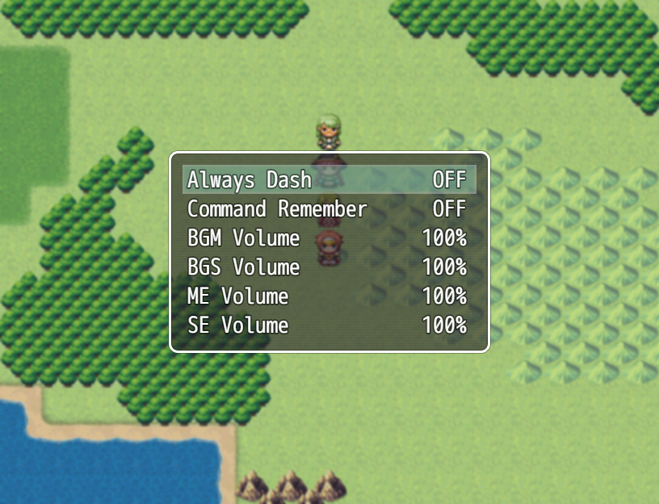
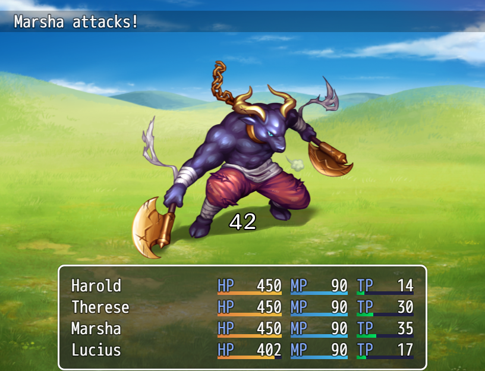
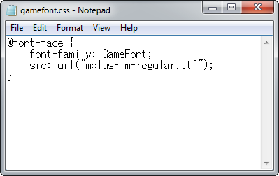
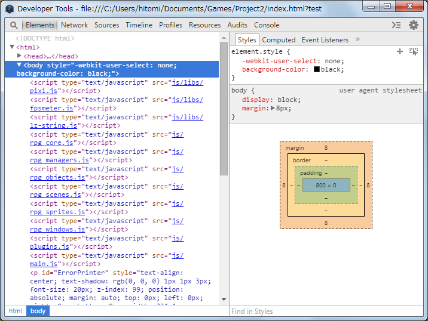

Game
Game features made using RPG Maker MV have also been improved.
Main Features
- It is now possible to change the game window size by dragging.
- You can now rapidly go through and speed up events by holding down the action key.
- The [Option] command has been added to the menu screen.

- The tempo for battles has been sped up compared to previous versions.
- The image of the target that an action will be performed on during battle will now flash.
- Damage values in battle will now pop up.

- State icons will now be displayed above enemies.

- Previously used skills will now be saved during movement and in battle.
- Music will continue playing without stopping when switching to the battle screen if the map and battle background music is the same.
- The game's title will now be stored in the save file. This will be used to differentiate games when uploading in order to use the same save domain on server.
- The maximum number of save files has been increased from 16 to 20.
- You can now change fonts by editing the CSS (/fonts/gamefont.css) file inside the game folder.
* To change font, copy the font file in the same folder. - It is now possible to run Developer Tools by pressing the F8 key while test playing your game.
Please refer to [How to Use Developer Tools] for more information. - You can play the game in your browser by uploading the project folder on a web server.
Please refer to [Gameplay System Requirements] for more information.